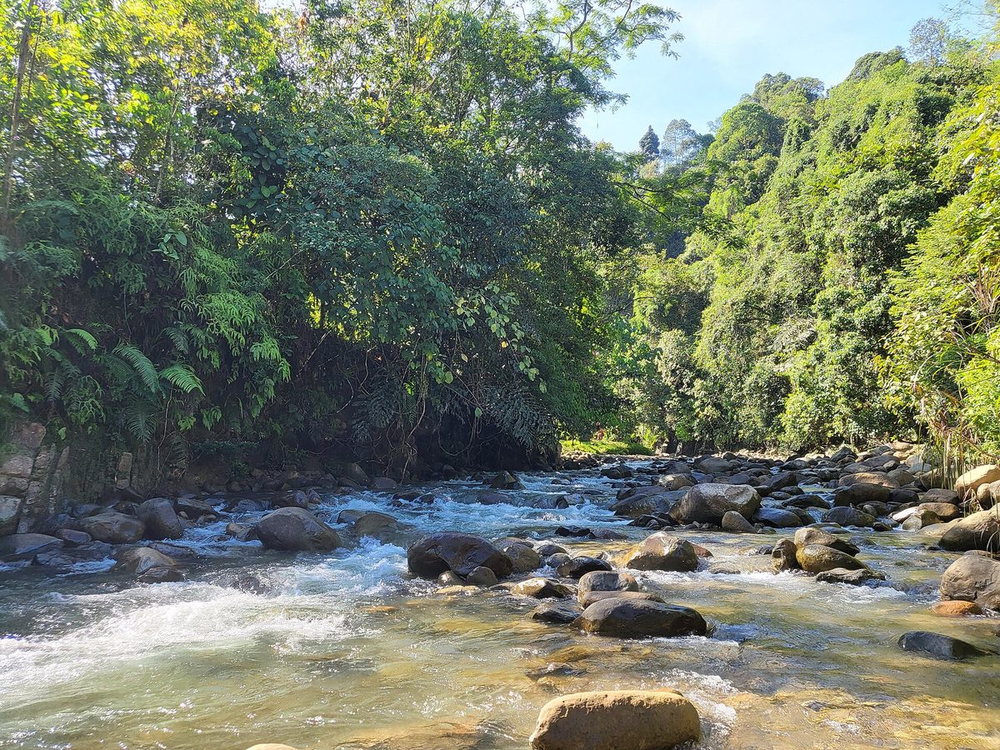

말레이시아 사바 원주민 사회적기업 토니붕, 유엔 말레이시아 혁신상…주민이 계획·건설·관리하는 재생에너지 설비 40곳 넘게 지원

페남팡 코불루 소수력, 주민 주도 개량으로 10kW→20kW 두 배…주민이 운영하고 주민이 합의한 요금으로 유지비 마련
말레이시아 사바주에 본부를 둔 원주민 주도 사회적기업 토니붕(Tonibung)이 공동체 주도 재생에너지를 넓힌 공로로 '유엔 말레이시아 어워드 2026' 혁신 부문 상을 받았다. 상은 쿠알라룸푸르에서 열린 유엔의 날 기념식에서 니콜라스 미인트(Nikolas Myint) 유엔 말레이시아·싱가포르·브루나이 상주조정관이 토니붕의 아드리안 라심방(Adrian Lasimbang)에게 건넸다. 수상 사유서에 따르면 토니붕은 말레이시아 곳곳에서 40곳이 넘는 재생에너지 설비를 지원하며 주민이 스스로 계획하고 짓고 관리하도록 도왔고, 기술에 교육과 공동체 조직화를 더해 주민이 설비를 오래 유지할 기술·관리 역량을 갖추게 했다. 대표 사례로 꼽힌 페남팡의 코불루(Kobulu) 소수력은 공동체가 이끈 개량으로 발전 용량을 10kW에서 20kW로 두 배로 늘렸으며, 주민이 운영하면서 주민이 합의한 요금으로 유지비를 댄다. 코불루 사업은 셸(Shell)의 에너지 접근(A2E) 프로그램 지원을 받았고 2023년 국가에너지상에서도 인정을 받았다. 유엔 말레이시아 국가팀은 토니붕이 지역사회·정부기관·개발 협력자와 함께 에너지 격차를 메우고 주민 생계를 나아지게 한 점을 높이 평가했다.
시민에너지 관점
40곳이 넘는 설비를 지원하면서 설비 자체보다 주민이 계획·건설·관리할 능력을 남기는 데 힘을 쏟았고, 코불루 소수력 주민들은 그 능력으로 소수력 용량을 10kW에서 20kW로 스스로 키웠다는 점이 이번 수상의 핵심이다. 외딴 마을 주민이 발전 설비를 감당할 수 있겠느냐는 의문이 따르지만, 주민이 함께 정한 요금으로 유지비를 마련하는 방식은 운영 책임과 비용을 마을 안에서 풀 수 있음을 보여 준다. 공동체 소유 에너지가 오래 가려면 준공 때의 보조금보다 그 뒤 수십 년을 버틸 마을의 운영 역량과 자치 규칙이 더 중요하다. 국내 햇빛소득마을과 공공부지 태양광도 준공에서 끝나지 않도록 주민 교육과 운영 조직, 유지비·수익 배분 규칙을 사업 설계 단계부터 함께 넣어야 한다.
출처: Daily Express 2026-10-29 기자 미표기 원문 보기
출처: Newswav(Daily Express 게재본) 2026-10-29 기자 미표기 원문 보기
マレーシア・サバ州の先住民社会的企業トニブン、国連マレーシア・イノベーション賞…住民が計画・建設・管理する再エネ設備40か所以上を支援
ペナンパンのコブル小水力、住民主導の改修で10kW→20kWに倍増…住民が運営し、住民が合意した料金で維持費をまかなう
マレーシア・サバ州に本部を置く先住民主導の社会的企業トニブン（Tonibung）が、共同体主導の再生可能エネルギーを広げた功績で「国連マレーシア・アワード2026」のイノベーション部門賞を受賞した。賞はクアラルンプールで開かれた国連デーの記念式典で、ニコラス・ミン（Nikolas Myint）国連マレーシア・シンガポール・ブルネイ常駐調整官から、トニブンのエイドリアン・ラシンバン（Adrian Lasimbang）氏に手渡された。受賞理由書によると、トニブンはマレーシア各地で40か所を超える再生可能エネルギー設備を支援し、住民が自ら計画し、建設し、管理できるよう後押ししてきたほか、技術に研修と共同体の組織づくりを組み合わせ、住民が設備を長く維持するための技術・管理能力を身につけられるようにした。代表例に挙げられたペナンパンのコブル（Kobulu）小水力発電は、共同体主導の改修で発電容量を10kWから20kWへと倍増させ、住民が運営しながら、住民が合意した料金で維持費をまかなっている。コブルの事業はシェル（Shell）の「アクセス・トゥ・エナジー（A2E）」プログラムの支援を受け、2023年の国家エネルギー賞でも評価された。国連マレーシア国別チームは、トニブンが地域社会や政府機関、開発協力パートナーとともにエネルギー格差を埋め、住民の暮らしを向上させた点を高く評価した。
市民エネルギーの視点
40か所を超える設備を支援しながら、設備そのものよりも住民が計画・建設・管理できる力を残すことに力を注ぎ、コブル小水力の住民たちがその力で小水力の容量を10kWから20kWへ自ら引き上げたことが、今回の受賞の核心だ。辺地の村の住民に発電設備が扱えるのかという疑問はつきまとうが、住民がともに決めた料金で維持費を用意するやり方は、運営の責任と費用を村の中で解決できることを示している。共同体所有のエネルギーが長続きするには、竣工時の補助金よりも、その後の数十年を支える村の運営力と自治のルールのほうが重要だ。韓国の陽光所得村や公有地太陽光も竣工で終わらないよう、住民研修と運営組織、維持費・収益配分のルールを事業設計の段階から組み込むべきだ。
出典: デイリー・エクスプレス（Daily Express） 2026-10-29 記者名なし 原文を読む
出典: Newswav（Daily Express掲載版） 2026-10-29 記者名なし 原文を読む
马来西亚沙巴原住民社会企业Tonibung获联合国马来西亚创新奖…已支持40多处由居民规划、建设和管理的可再生能源设施
兵南邦Kobulu小水电经社区主导改造，装机由10kW翻倍至20kW…由居民运营，以居民商定的电价支付维护费用
总部位于马来西亚沙巴州、由原住民主导的社会企业Tonibung，因推动社区主导的可再生能源，获得“2026年联合国马来西亚奖”创新类奖项。该奖项在吉隆坡举行的联合国日纪念仪式上，由联合国驻马来西亚、新加坡和文莱驻地协调员尼古拉斯·明特（Nikolas Myint）颁给Tonibung的阿德里安·拉辛邦（Adrian Lasimbang）。根据获奖评语，Tonibung已在马来西亚各地支持40多处可再生能源设施，帮助居民自行规划、建设和管理，并把技术与培训、社区组织工作相结合，使居民具备长期维护设施所需的技术和管理能力。被列为代表案例的兵南邦Kobulu小水电项目，经社区主导的改造将发电容量从10kW翻倍至20kW，由居民运营，并以居民共同商定的电价支付维护费用。Kobulu项目得到壳牌（Shell）“能源可及（A2E）”计划的支持，并在2023年国家能源奖中获得认可。联合国驻马来西亚国家工作队高度评价Tonibung与社区、政府机构和发展伙伴合作，弥合能源差距、改善居民生计。
市民能源视角
在支持40多处设施的过程中，Tonibung着力留下的不是设备本身，而是居民规划、建设和管理的能力，Kobulu小水电的居民正是凭借这种能力自行把小水电容量从10kW提高到20kW，这正是此次获奖的核心。偏远村庄的居民能否驾驭发电设施，难免令人怀疑，但由居民共同商定电价来筹集维护费用的做法表明，运营责任和成本可以在村庄内部解决。社区所有的能源要想长久运转，比竣工时的补贴更重要的，是支撑此后几十年的村庄运营能力和自治规则。韩国的阳光收入村和公共用地光伏也不应止步于竣工，而应从项目设计阶段起就纳入居民培训、运营组织以及维护费和收益分配规则。
来源: 每日快报（Daily Express） 2026-10-29 未署名 查看原文
来源: Newswav（Daily Express转载版） 2026-10-29 未署名 查看原文
Sabah Indigenous social enterprise Tonibung wins UN Malaysia innovation award for supporting more than 40 renewable energy installations planned, built and managed by residents
Kobulu micro-hydro in Penampang doubled from 10kW to 20kW through a community-led upgrade; residents run it and pay for upkeep through a community-agreed tariff
Tonibung, an Indigenous-led social enterprise based in Sabah, Malaysia, has won the Innovation category of the United Nations in Malaysia Awards 2026 for expanding community-led renewable energy. The award was handed to Tonibung's Adrian Lasimbang by Nikolas Myint, UN Resident Coordinator for Malaysia, Singapore and Brunei Darussalam, at a UN Day ceremony in Kuala Lumpur. According to the award citation, Tonibung has supported more than 40 renewable energy installations across Malaysia, helping residents plan, build and manage their own systems, and has paired technology with training and community organising so that residents gain the technical and management skills to keep their systems running. Among the highlighted projects, the Kobulu micro-hydro scheme in Penampang doubled its generating capacity from 10kW to 20kW through a community-led upgrade and is run by residents, who cover its upkeep through a tariff they agreed among themselves. The Kobulu project was supported by Shell's Access to Energy (A2E) programme and was also recognised at the National Energy Awards 2023. The UN Country Team in Malaysia commended Tonibung for working with communities, government agencies and development partners to close energy gaps and improve livelihoods.
Citizen Energy View
The heart of this award is that, across more than 40 installations, Tonibung focused less on the equipment itself than on leaving behind residents' ability to plan, build and manage it, and that the residents running the Kobulu scheme used that ability to raise its micro-hydro capacity from 10kW to 20kW themselves. There are doubts about whether residents of remote villages can handle generating equipment, but raising upkeep through a tariff that residents set together shows that operating responsibility and costs can be settled within the village. For community-owned energy to last, a village's operating capacity and self-governing rules over the following decades matter more than the subsidy at completion. Korea's Sunlight Income Villages and solar on public land should likewise not end at completion, building resident training, an operating organisation and rules for upkeep and revenue sharing into project design from the start.
Source: Daily Express 2026-10-29 No byline Read the original
Source: Newswav (Daily Express syndicated copy) 2026-10-29 No byline Read the original